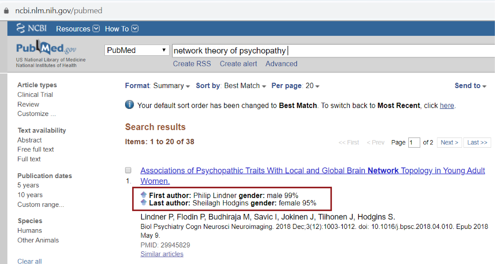

Tools Enabling Citation Transparency: Some recent work from Jordan Dworkin showed that neuroscience tends to cite men more than would be expect given thier prevalence in the field and that this trend in increasing with time. While there are many courses of action to help mitigate these biased citation practices, I have recently helped contribute to some tools that can help individuals quantify and offset these biases.
I have developed a Google Chrome extension with Matthew Schaff that will display the probabilistic gender of first and last authors of all papers on Google Scholar or PubMed search page. The idea is that is people are consciously aware of this information as they are searching for references, they can more easily choose to cite a diverse group of scientists.
I have also contributed to a project led by Dale Zhou that developed a jupyter notebook that will quantify the gender breakdown of first and last authors in a .bib file. The hope is that authors can see the gender breakdown of their citations, and then retroactively add more work from women led teams.
There are a lot of limitations to these tools, the first that I notice is the lack of intersectionality. We hope to help extend these tools to race in the near future. Additionally, the classification of authors in man/woman categories imposes a false gender binary. The intent here is to capture the perceived gender of the authors, rather than reflect their true gender identity.
Python Packages: Along with my colleagues Dr. Linden Parkes and Jason Kim I've been working on a Python package to help researchers use tools from network control theory. The package is still in its beta stages, but you can test it out on PyPi and look through the code and docs.